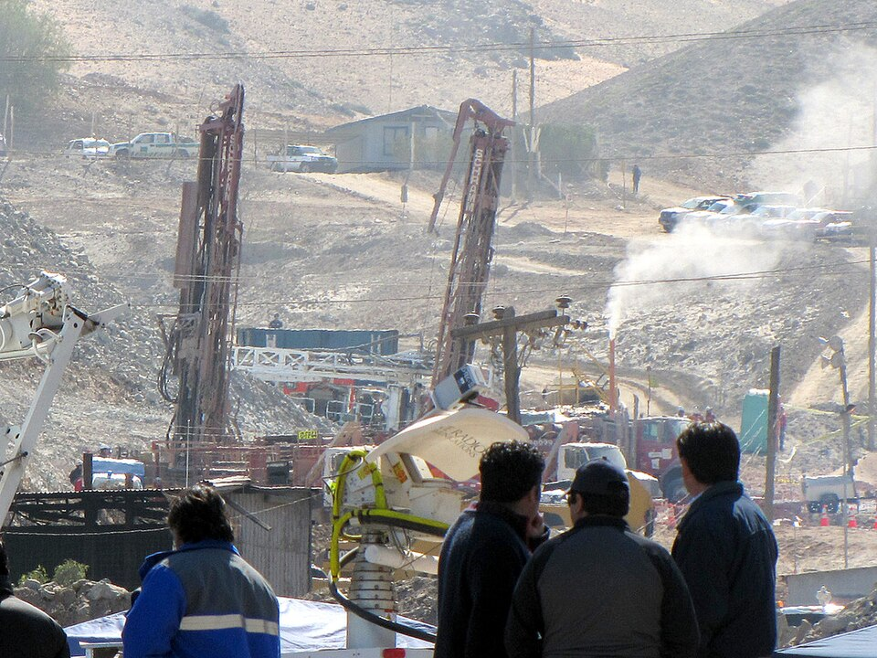

¡Están todos afuera! Chile rescata a sus 33 mineros tras 69 días bajo la tierra
Uno por uno, izados en una cápsula por un pozo de 700 metros, los hombres de la mina San José volvieron a la superficie ante mil millones de televidentes. Habían sobrevivido 17 días dados por muertos, racionando cucharadas de atún en la panza de la montaña.

A las doce y diez de la madrugada, la cápsula Fénix 2 asomó por la boca del pozo con Florencio Ávalos adentro, y el desierto de Atacama estalló en un grito que dio la vuelta al planeta. Uno tras otro, durante casi veinticuatro horas, los treinta y tres mineros sepultados desde el 5 de agosto fueron subiendo por el conducto de setecientos metros que las perforadoras tardaron semanas en abrir: quince minutos de viaje vertical entre la roca, con anteojos oscuros para que el sol, después de sesenta y nueve días, no les hiriera los ojos. El último en subir, como corresponde a un jefe de turno, fue Luis Urzúa: «Hemos hecho el relevo», le dijo al presidente Piñera al abrazarlo.
La historia completa merece ser contada a los nietos. Cuando el cerro se derrumbó, los treinta y tres quedaron atrapados en un refugio con comida para dos días, y la estiraron diecisiete días a razón de dos cucharadas de atún y medio vaso de leche cada cuarenta y ocho horas, mientras arriba los daban por muertos. El 22 de agosto, una sonda que tanteaba a ciegas volvió a la superficie con un papel atado con cinta aislante: «Estamos bien en el refugio los 33». Desde entonces, por tres conductos del ancho de una naranja, bajaron comida, luz, cartas y hasta imágenes de fútbol, mientras tres perforadoras corrían una carrera contra la roca y contra el ánimo de los de abajo.
La ingeniería del rescate fue una carrera de tres caballos: los planes A, B y C perforaban a la vez con tecnologías distintas, por si alguno fallaba, y ganó el B, una máquina traída para pozos de agua, guiada por un perforista americano que llegó desde Afganistán y describió el trabajo como enhebrar una aguja de setecientos metros. La NASA, consultada porque nadie sabe más de encierros largos, mandó médicos y una lista de consejos que van de la dieta al diseño de la cápsula: esa Fénix de media tonelada, construida por los astilleros de la armada chilena, con ruedas de goma, oxígeno propio y un arnés por si el pasajero se desmaya en el viaje. Por el conducto bautizado «la paloma» bajaron en estos meses toneladas de carga, empezando por glucosa y terminando por un proyector de cine.
Abajo, los treinta y tres se organizaron como un pueblo chico: hubo jefe, turnos de trabajo, enfermero, un pastor que ofició cultos diarios, un cronista que llevó el diario de la mina en un cuaderno, y luz artificial encendida y apagada a horario para que el cuerpo no perdiera el calendario. Se vio fútbol por una señal bajada desde la superficie y se corrieron carreras para mantener el ánimo y las piernas. Arriba, el campamento Esperanza creció de doce carpas a una ciudad con escuela y comedor, donde las familias sostuvieron sesenta y nueve días de velas encendidas. Y hubo hasta propuesta de casamiento: un minero salió del pozo directo a prometerle a su mujer, tras veinticinco años de convivencia, la boda por iglesia que le debía.
Mil millones de personas, dicen los medidores de audiencia, miraron esta noche cómo un país pequeño y sísmico, que este mismo año lloró un terremoto terrible, convertía una tragedia minera en la operación de rescate más limpia que se recuerde: ingeniería, disciplina y un jefe de turno que allá abajo impuso raciones, tareas y esperanza por partes iguales. La mina San José, vieja y observada desde hacía años, no debió haberse tragado a nadie, y esa cuenta llegará a los tribunales. Pero la crónica de hoy tiene derecho a quedarse con lo otro: treinta y tres hombres que la tierra devolvió vivos, y un cartel escrito con fibra que ya es patrimonio del idioma.